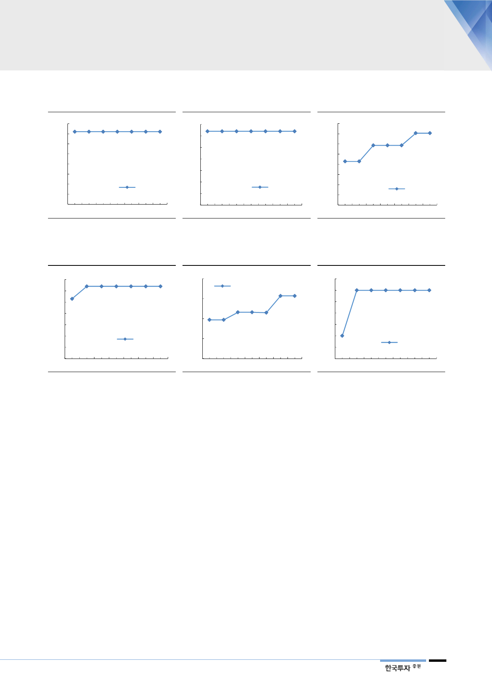

[그림 19] 예상 정비일수 추이
- 한울 3호기
(일)
160
140
120 144 144 144 144 144 144 144
100
80
60
40
한울 3호기
20
0
Oct-17
Dec-17
Feb-18
현재
자료: 한국수력원자력, 한국투자증권
[그림 20] 예상 정비일수 추이
- 한울 6호기
(일)
70
60
64 64 64 64 64 64 64
50
40
30
20
한울 5호기
10
0
Oct-17
Dec-17
Feb-18
현재
자료: 한국수력원자력, 한국투자증권
[그림 21] 예상 정비일수 추이
- 월성 1호기
(일)
400
350
300
353 353
250
293 293 293
200
214 214
150
100
월성 1호기
50
0
Oct-17
Dec-17
Feb-18
현재
자료: 한국수력원자력, 한국투자증권
[그림 22] 예상 정비일수 추이
- 월성 2호기
(일)
70
60
64 64 64 64 64 64
50
53
40
30
20
월성 2호기
10
0
Oct-17
Dec-17
Feb-18
현재
자료: 한국수력원자력, 한국투자증권
[그림 23] 예상 정비일수 추이
- 고리 2호기
(일)
200
고리 2호기
150
157 157
100
116 116 115
97 97 CLP 및 시험성적서 누락에
50
따른 전수검사는 일정에 반영
0
Oct-17
Dec-17
Feb-18
현재
주: 고리 2호기는 4월 12일 예방정지 시작 예정
자료: 한국수력원자력, 한국투자증권
[그림 24] 예상 정비일수 추이
- 신월성 1호기
(일)
72
71
71
71 71 71 71 71 71
70
CLP 및 시험성적서 누락에
70
따른 전수검사는 일정에 반영
69
69 69
신월성 1호기
68
Oct-17
Dec-17
Feb-18
현재
주: 신월성 1호기는 4월 16일 예방정지 시작 예정
자료: 한국수력원자력, 한국투자증권
낮은 원전이용률
정부 입장에서 부담
일부 정부에서 탈원전 논리를 펼치기 위해 원전 이용률을 의도적으로 낮춘다는
목소리가 있다. 하지만 오히려 정부 입장에서 낮은 원전이용률은 부담이다. 언론
등을 통해서 에너지 전환에 대한 비판적인 여론이 형성되고 있기 때문이다. 최근
일부 원전의 정비기간은 늘리지 않고, 정비 시작시점을 미루는 사례가 있었다. 이
는 정부도 전력 수급상황을 고려해 일정을 조절하는 것으로 판단된다. 또한 작년
까지는 원전 연간 정비계획을 미리 파악해 공급계획을 세웠으나, 올해들어 1~2
주 단위로 정부와 한수원이 정비 진행사항을 수시 체크 중이다. 이 또한 지금의
낮은 원전이용률이 정부에게 부담이라는 논리를 뒷받침한다.
9